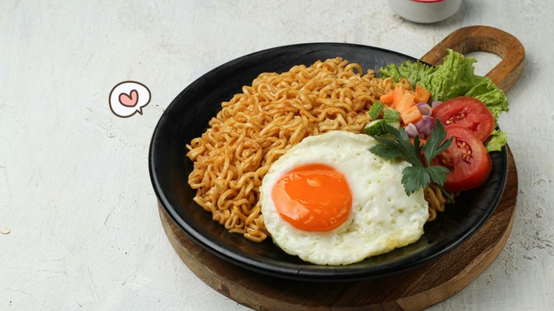
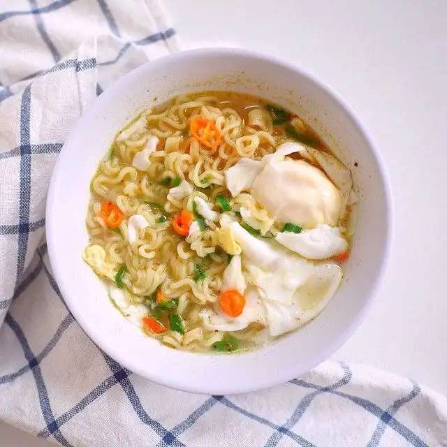

Berbagai Resep Menggunakan Indomie
Indomie dapat diolah menjadi berbagai hidangan lezat. Berikut beberapa resep yang dapat Anda coba:
- Mie Goreng 
- Mie Kuah 
Cari tahu bagaimana cara membuatnya di situs resmi Indomie.
Indomie dapat diolah menjadi berbagai hidangan lezat. Berikut beberapa resep yang dapat Anda coba:
Cari tahu bagaimana cara membuatnya di situs resmi Indomie.